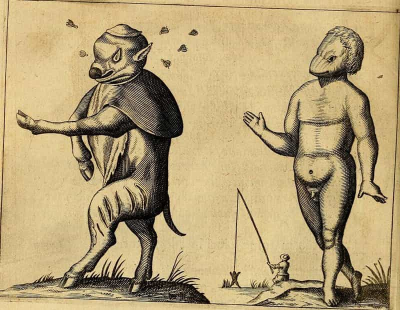
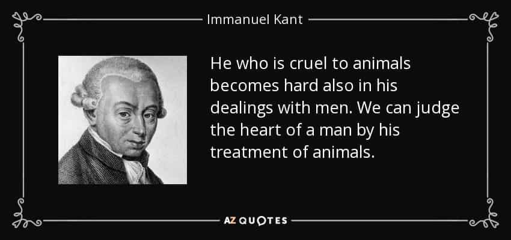

ROK and associated writers have taken quite deep interest in morals and proper behavior, and linked the discussions to Greco-Roman virtue ethics, Christianity, science, and common sense. Roosh has rightly pointed out the the danger of hedonic adaption and earlier also suggested a middle path which avoids so-called ‘ego sex’.
I myself have looked into Apollonian culture, simply meaning an ordered and virtuous way of life, and suggested a model of roughly 90% Apollonian and 10% Dionysian (hedonism) elements in our lives.
However, that does not answer the question which actions and behaviors that are acceptable or not. Hence I will look into that, with them aim to provide some proper guidelines.
Although Christianity provides many answers for how to live a moral life and build a society centered on spirituality, social order, binary sex roles, and monogamy, it nevertheless lacks some fundamental elements. For instance, much of the New Testament and the Pauline epistles are partly irrelevant for today’s Western societies. Paul was but a man and his concerns were directed towards new adherents in the Mediterranean region and Asia Minor.
Moreover, many of the contents of the Bible are compiled of texts by several authors. In the process of translation, new interpretations emerge. Thus there is not a single essential message in the Bible but rather certain tendencies of faith and morals which signify the two testaments. Hence I am hesitant to, despite all its wisdom, let my life solely be guided by such multifarious sets of ideas. Especially since much is not relevant for today.
An additional perspective, that will provide a broader “law of conduct”, are if your actions are hurting yourself and/or other people. I will give some examples of actions which appear to do that.
1. Sexual deviances
Sexual deviances can hurt the individual who commit them, and the victims of such actions. Here the saying of lesser evils can give context to that kind of behavior.
Although sodomy is always bad and wrong, it is even worse if it includes pedophilia and bestiality. Even though animals have a lower generic value than humans, both from a legal and moral standpoint, it is a disgusting behavior that should be avoided at all costs.

2. Ego and casual sex
Heterosexual ego sex is bad only if it may hurt the individual and the people which are affected by such actions; the action as an isolated example is neutral, though.
If, however, ego sex leads to a broader degeneracy, which affects individual emotions, private economy, and human relations, it is wrong. Ego sex is thus relative.
3. Breaking the law
Laws often reflect certain cultural, political, and social tendencies, rather than being purely the result of objective and “independent” legislative decisions. Therefore one must always be aware of that they do not always conform to common sense, sound science, or near-universal and timeless wisdoms found in scriptures.
Yet, overall, to break the law means you do you and the people around you more harm than good. Hence you should abide by it, although some minor deviances are acceptable.
4. Manupulating others
Whether or not it is acceptable to manipulate other people is tricky, since you have every right to try to persuade others and protect your own interests. However, to lie and deceive – especially for a bad purpose – is negative and may likely hurt others. It will likely also corrupt the individual and lead to a downward spiral of moral decay.
Approach with caution, but be open for to use it to safeguard yourself and those around you. Often the situation, rather than the rule, decides which way to go.

5. Narcotics and drunkedness
Already in Renaissance thinking, such as Lorenzo Valla’s work On Pleasure, there were attempts made to incorporate Epicurean ideas into Christanity and humanism. In current times it can imply to drink alcohol from time to time and even be a bit drunken.
Although alcoholic intake is relative, to be drunk is often associated with a set of bad behaviors, such as aggression, verbal conflicts, unwise risk-taking, and negative impact on brain and general health. Taken morals into account, it is wise to drink selectively and never become intoxicated.
As for narcotics they are often, but not always, even more detrimental but something like temporary use of sleeping pills will likely not hurt you or someone else.

6. Hurting animals
It appears as if most masculine men are anthropecentric, meaning that they regard human beings as more valuable than other life forms, including animals. This largely conforms to both Christianity and modern ethical models like utilitarianism.
As Immanuel Kant rightly emphasized, to hurt animals may lead to that you hurt yourself and other. Moreover, many animals do not deserve do be treated badly for no other reason than being potential food sources or attacking you under very particular circumstances. Pets may also be valuable for masculine men, although not as significant as for a cat lady. Thus animals should only be hurt in the process of killing them for food.

Conclusion
I think it is important to discuss general guidelines and have a more nuanced and balanced understanding of moral behaviors in our everyday lives. The wisdom found in Christianity, and partially in other traditions, combined with the hurting yourself or others perspective will be useful when you make proper decisions.
If you want to read more of William Adams’ material, check out his website Syncretic Politics.
Read More: The Ethical Principles Of Neomasculinity